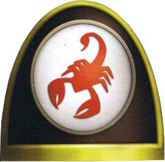
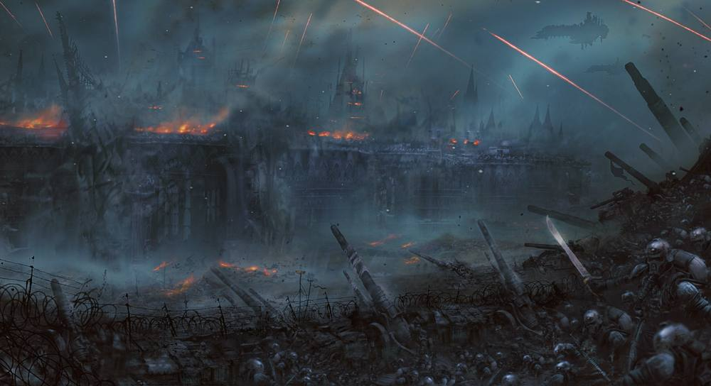

Siege of Vraks
| Siege of Vraks | |
|---|---|
| Recorded by the Administratum as the Liber Vraks Obsidius | |
 A Death Korps of Krieg officer and his grenadiers on the plains of Vraks Prime, with Imperial Titans and aircraft behind them Painting by Igor Kieryluk | |
| Date | 813–830.M41 |
| Location | Vraks Prime, Vraks system, Scarus Sector, Segmentum Obscurus |
| Result | Pyrrhic Imperial victory. The Citadel taken and the rebels destroyed; a daemonic incursion defeated; Vraks Prime left a wasteland and the system interdicted by the Ordo Malleus |
| Belligerents | |
| Imperium  Red Scorpions | Rebels and Traitors Nurglite warbands Nurglite warbands |
| Commanders and leaders | |
| Necrosius | |
| † Killed in action | |
| Units involved | |
| Plague warriors of Necrosius | |
| Strength | |
| Casualties and losses | |
| Imperium | Rebels and Traitors |
| Nearly all 8,000,000 civilians killed[g] | |
The Siege of Vraks was a campaign fought between 813 and 830.M41 to retake the armoury world of Vraks Prime, in the Scarus Sector of the Segmentum Obscurus, from the Apostate Cardinal Xaphan. It was fought for most of its course by the 88th Siege Army, raised from the Death Korps of Krieg, in a war of trenches, artillery and attrition that the Administratum had planned to last twelve years. It lasted seventeen and cost some fourteen million Imperial soldiers.[1][2]
What began as an Ecclesiarchal rebellion became a war of Chaos. Traitor Space Marines of the Alpha Legion joined the defenders in 820.M41, followed by warbands of Khorne and Nurgle, Traitor Titans and a Chaos fleet. In the last years the Khornate lord Zhufor seized the Citadel from Xaphan and opened the way for a daemonic incursion led by the Bloodthirster An'ggrath. The Ordo Malleus took command of the war under Inquisitor Lord Hector Rex, and with the Grey Knights, the Red Scorpions and the Angels of Absolution finished it in 830.M41. Vraks was left a ruin and placed under interdiction.[1][3]
Background
[edit]Vraks Prime
[edit]Vraks Prime was an armoury world of the Departmento Munitorum: a barren planet whose vast stores of weapons, munitions and vehicles supplied Imperial armies across the region, including the Cadian regiments that guarded the Eye of Terror. Its population of some eight million was largely made up of labour gangs, many of them penal workers. It was also the site of a shrine to Saint Leonis the Blind, a missionary martyred in the 38th millennium, and of a palace kept for the use of the Cardinal of the sector.[1]
Cardinal Xaphan
[edit]In 804.M41 the long-lived Cardinal Borja of Scarus died and was succeeded by Xaphan. The new cardinal spent five years touring his diocese with a large entourage, including a bodyguard of the Order of the Argent Shroud, and preaching a revival of faith. On world after world his arrival set off uprisings against corrupt governors, and his followers began to call him a messiah. At his side was a young deacon named Mamon, a secret servant of Chaos, who encouraged him to believe that he was the Emperor's chosen champion and that he was surrounded by enemies. In 809.M41 Xaphan withdrew to Vraks. There Mamon's preachers raised the Disciples of Xaphan, a fanatical inner guard, and won over the commanders of the Vraks garrison and militia. By the time Imperial authorities noticed, only the Adeptus Arbites on the world were outside the Cardinal's control.[1][4]

The Ordo Hereticus, alarmed by his preaching, arranged for his death. An Imperial assassin of the Vindicare Temple was sent to kill him and failed. Vraks rose in open rebellion in c. 810.M41.[h] The Cardinal seized the Citadel and the armouries, and the world's labour gangs, promised redemption in a holy war, followed him.[1]
Prelude
[edit]The Departmento Munitorum judged that Vraks had to be retaken: its stores were needed, and its loss broke a supply chain that reached to the Cadian Gate. The Segmentum Obscurus high command on Cadia gave the task to Lord General Zuehlke, a nobleman of the Segmentum Solar whose qualifications were chiefly his family and his study of the Tactica Imperialis. He set up his headquarters on Thracian Primaris. His army was drawn entirely from Krieg, whose regiments were known for their willingness to accept any loss. Munitorum planners calculated the campaign as a matter of arithmetic: so many men to break each line, so many shells for each kilometre.[1]
The defenders had used the time well. Millions of rebels, among them the Vraksian militia, Frateris zealots and labour corpsmen, were dug into three belts of fortifications around the Citadel, protected by minefields, razor-wire and orbital defence lasers. Enforcers kept discipline by summary execution. The 88th Siege Army landed in 812.M41 on the plain called the Van Meersland Wastes, and in 813.M41 its guns opened fire.[1]

The war of attrition (813–822.M41)
[edit]The outer lines
[edit]The first assault on the outer defences began in 813.M41. The Krieg regiments advanced by sap and trench under constant bombardment, and the fighting quickly settled into a pattern of attack and counter-attack over a few kilometres of churned ground. In 814.M41 the battle for Fort A-453 showed the cost of each strongpoint. In 815.M41 a breakthrough by the 1st Korps nearly ended in its encirclement. By 816.M41 the army had reached the second line, where it advanced behind Gorgon armoured transports through massed artillery fire. Every gain was paid for in tens of thousands of lives.[1]

The Alpha Legion
[edit]In 820.M41, seven years into the siege, a warband of the Alpha Legion under the Chaos lord Arkos the Faithless joined the defenders. Its battleship, the Anarchy's Heart, had slipped into the system unseen, and the Traitor Astartes had landed at the star port by posing as loyal Space Marines come to aid the siege. They crossed into the rebel lines during a Krieg attack and offered their services to the Cardinal. Their raids, and the training they gave the militia, slowed the Krieg advance still further.[1]
The Dark Angels at the star port (821.M41)
[edit]Arkos was an old enemy of the Dark Angels, and in 821.M41 Supreme Grand Master Azrael came to Vraks himself with a strike force to capture him. The Dark Angels attacked the Vraks star port on the 944th day of the year and took it after hard fighting on the causeways, but Arkos escaped. Interrogator-Chaplain Belphegor saved Azrael's life in the battle. The Dark Angels withdrew, and the Chaplain remained determined to finish the hunt.[1][5]
The Big Push and the crisis (822–824.M41)
[edit]Zuehlke's great offensive of 822.M41, the Big Push, broke through parts of the second line. Then the war turned. In 823.M41 a Chaos fleet summoned by the Alpha Legion defeated the Imperial squadrons over Vraks, led by Rear-Admiral Rasiak in the cruiser Lord Bellerophon, in the First Battle of Vraks, and cut the army's supply. Warbands of Khorne and Nurgle, and Titans of the Traitor Legio Vulcanum, reinforced the defenders. A Krieg counter-offensive in sector 61-47 ended in disaster, and the army began to give ground.[1]
The Lord Militant of the Segmentum Obscurus relieved Zuehlke, who was moved to another staff appointment, and gave the command to Marshal Arnim Kagori, an elderly nobleman who had won the long siege of Hive Thetis. The Ecclesiarchy and the Ordo Hereticus each pressed to have their own commander instead, and the Departmento Munitorum threatened to withdraw its support if either succeeded. For almost a year the 88th Army, short of shells and men, held on in its trenches while Kagori assembled a relief.[1]
The Kagori offensive (824–827.M41)
[edit]Kagori's convoy sailed in 824.M41, fought its way back into the system in the Second Battle of Vraks and brought the Legio Astorum and fresh regiments to the surface. His offensive drove the enemy back into the inner lines. The war was now fought underground as well as above, as Krieg engineers dug tunnels beneath the enemy's works and fought the rebels in the dark. To break the last defences around the Citadel, Kagori asked for a Space Marine Chapter, and the Red Scorpions sent a strike force under their Lord High Commander, Carab Culln. By 827.M41 the army stood at the foot of the Citadel rock.[1]

The Ordo Malleus (827–830.M41)
[edit]The Conclave of Scarus
[edit]After fourteen years of war, Inquisitor Lord Hector Rex of the Ordo Malleus asked the Conclave of Scarus for authority to take command. The Warp-seer Malphius had read in the Emperor's Tarot that Vraks was about to become the site of a great daemonic incursion, and Rex believed him. Ground soaked with the blood of millions was, in the Ordo's experience, ground prepared. The Ordo Hereticus opposed him in the Conclave, but the motion passed, and the whole 88th Army came under his authority.[3]
The ascension of Zhufor
[edit]Inside the Citadel the rebel alliance was breaking. As supplies ran short, morale among Xaphan's mortal followers collapsed. Zhufor, lord of the Skulltakers, who had come to Vraks only for slaughter, defeated the leader of the Berserkers of Skallathrax in single combat and so united the Khornate warbands. He then took the Cardinal's palace. The Disciples of Xaphan were butchered, Mamon fled to the Nurglite warband called the Tainted, and Xaphan was taken alive. Zhufor made a pact with the warband called the Sanctified to summon An'ggrath, greatest of the Bloodthirsters of Khorne.[3]
The daemons
[edit]The incursion came as the Imperial assault reached the gates of the Citadel. Daemons poured into the breaches. At the Cardinal Gate the Bloodthirster An'ggrath himself descended. Hector Rex met it with his sword Arias and, with the last of his strength, drove the blade into the daemon's heart and banished it to the Warp. The Red Scorpions fought through the Gate of Saint Leonis and the Cardinal's palace.[3]
The fall of the Citadel
[edit]In the final assault the Angels of Absolution, sent by Azrael to finish the hunt for Arkos, landed on the Citadel. Their Interrogator-Chaplain Belphegor met Arkos and his last warriors at the Basilica of Saint Leonis. The Angels of Absolution battle barge Liberatorii Delictum, with the strike cruiser Repentant, caught the Anarchy's Heart as it tried to escape on the 288th day of 830.M41 and destroyed it. Rex led his Grey Knights into the Priory of the Argent Shroud, where they found the thing that Xaphan had become, a mindless spawn of Chaos, and destroyed it.[3][5]

Zhufor and the surviving Khornate warriors escaped through a Warp portal in the inner keep, leaving behind the daemon prince Uraka Warfiend to guard it. On the 411th day of 830.M41 Brother-Captain Arvann Stern of the Grey Knights defeated Uraka, and the Grey Knights destroyed the portal by their combined psychic power. Necrosius and his plague warriors had already fled. The siege was declared at an end on the 414th day of 830.M41.[3]
Aftermath
[edit]The Administratum recorded the war in a single volume, the Liber Vraks Obsidius, which was sealed and sent to the Lord Militant Obscurus and then to the archives of Terra. The siege had lasted nearly eighteen standard years against a plan of twelve. Thirty-four Krieg regiments had served and about fourteen million Guardsmen had died. Almost the entire population of Vraks was dead. Prisoners were vetted by the Ordo Malleus and executed or sent to penal colonies.[1]
Nothing on Vraks was worth recovering. The armouries and their stores had been destroyed or used up, the Citadel was razed by Krieg engineers, and the Van Meersland Wastes remained a field of mines, unexploded shells and gas. Hector Rex concluded that the system should be interdicted. Automated beacons warn ships away, and Navy patrols pass through to keep it from becoming a pirate haven. It is kept as a memorial and as a warning.[1][3]
Legacy
[edit]The Siege of Vraks is held up in the Astra Militarum as the defining example of Krieg's way of war: patient, impersonal and indifferent to loss. It is also cited, within the Inquisition, as a warning of what an apostate cardinal can become and of the way a long war of attrition can be used to prepare the ground for daemons. The disputes over command between the Departmento Munitorum, the Ecclesiarchy, the Ordo Hereticus and the Ordo Malleus are studied as an example of the costs of divided authority. Zhufor, Arkos and Necrosius were never taken.[2][3]
Timeline
[edit]The principal dated events of the siege, from the rebellion to the declaration of its end.
| Date | Event | Theatre |
|---|---|---|
| 804.M41 | Cardinal Borja of the Scarus Sector dies; Cardinal Xaphan succeeds him. | Segmentum Obscurus |
| 809.M41 | Xaphan withdraws to the armoury world of Vraks Prime; the Disciples of Xaphan are raised. | Vraks Prime |
| c. 810.M41 | Vraks rises in open rebellion; Xaphan seizes the Citadel of Vraks and the armouries.[i] | Vraks Prime |
| 812.M41 | The 88th Siege Army of the Death Korps of Krieg lands on the Van Meersland Wastes. | Vraks Prime |
| 813.M41 | The siege begins; the first assault on the outer defences. | Vraks Prime |
| 814.M41 | The Battle of Fort A-453. | Vraks Prime |
| 815.M41 | A breakthrough by the 1st Line Korps nearly ends in its encirclement. | Vraks Prime |
| 820.M41 | A warband of the Alpha Legion under Arkos the Faithless joins the defenders. | Vraks Prime |
| 821.M41 | The Dark Angels, led by Azrael, take the Vraks star port; Arkos escapes. | Vraks star port |
| 822.M41 | Lord General Zuehlke launches the Big Push, breaking through parts of the second line. | Vraks Prime |
| 823.M41 | The First Battle of Vraks; a Chaos fleet defeats the Imperial squadrons and cuts the army's supply. | Vraks system |
| 824.M41 | Marshal Arnim Kagori returns with relief forces in the Second Battle of Vraks. | Vraks system |
| 827.M41 | The Conclave of Scarus gives command of the war to Hector Rex of the Ordo Malleus; the Imperial army reaches the foot of the Citadel. | Vraks Prime |
| c. 829.M41 | Zhufor of the Skulltakers seizes the Citadel from Xaphan and summons An'ggrath.[j] | Citadel of Vraks |
| 830.M41 | An'ggrath descends at the Cardinal Gate and is destroyed by Hector Rex. | Citadel of Vraks |
| 288.830.M41 | The Angels of Absolution destroy the Anarchy's Heart as it tries to escape. | Vraks system |
| 411.830.M41 | Uraka Warfiend is defeated by Arvann Stern and the Grey Knights destroy the Warp portal. | Citadel of Vraks |
| 830.M41 | The Siege of Vraks is declared at an end. | Vraks Prime |
See also
[edit]
Notes
[edit]- ^ Their battle barge was the Liberatorii Delictum.
- ^ Their battleship was Anarchy's Heart.
- ^ Also the Berserkers of Skallathrax.
- ^ Including militia and labour corps.
- ^ Estimated; Imperial records give no figure.
- ^ Arkos, Zhufor and Necrosius escaped.
- ^ Nearly all the people of Vraks died. Vraks Prime was left a wasteland of mines, shells and gas, and the system was interdicted.
- ^ Estimated; no record gives an exact year.
- ^ Estimated; no record gives an exact year.
- ^ Estimated; no record gives an exact year.
References
[edit]- ^ a b c d e f g h i j k l m n o p q Imperial Armour Volume Five - The Siege of Vraks - Part One, pp. 6-75.
- ^ a b Imperial Armour Volume Six - The Siege of Vraks - Part Two, pp. 6-80.
- ^ a b c d e f g h Imperial Armour Volume Seven - The Siege of Vraks - Part Three, pp. 6-76.
- ^ Imperial Armour - The Siege of Vraks (Second Edition), pp. 10-194. Games Workshop.
- ^ a b Imperial Armour Volume Two (Second Edition) - War Machines of the Adeptus Astartes, pg. 225. Games Workshop.